Contents
Your first takeoff
From a plan set PDF to priced quantities in seven steps. No plans at hand? Tap Try the sample plan in an empty library and follow along on a real electrical sheet. It opens at its printed scale, with the lighting plan's items first, so the first tap counts; every Tally Pro feature works on it.
- Import your plansIn the library, tap +, choose the starter list for your trade (or Blank), then pick the plan set PDF. A photo or scan of a single sheet works too.
- Set the scaleMost sheets print their scale, and Tally offers it in one tap when you start taking off; a site sheet that prints only a scale bar is read from the bar's numbers; a sheet that prints none (a photo, a sketch) offers Calibrate instead. You can also pick it from the scale button at the top, or calibrate from any dimension. More on scale
- Pick an itemChoose Take off in the tool bar, then tap an item in the items panel (or pick one from the item button under the tools). Add your own with Add item.
- CountTap each symbol. Or zoom in, turn on Find all and tap one: every match on the sheet is proposed for you to check and add. How Find all works
- MeasureFor a length, tap along the run and tap Done. For an area, tap its corners and tap Done. Taps snap to the drawing's lines. Lengths and areas
- Price itGive each item a unit cost and waste, then add overhead, profit and tax under the total. Pricing the bid
- Export or shareThe export button at the top sends an Excel workbook, a CSV, a PDF report or the marked-up plans. Exports
Every change can be undone. Undo sits at the top of the screen (⌘Z on a Mac), and a whole Find all or a whole sheet of rooms comes off in one Undo.
Finding your way around
A takeoff opens on one sheet of the set, with the tools along the bottom and your items on the right. Hover a number to find it on the screen.
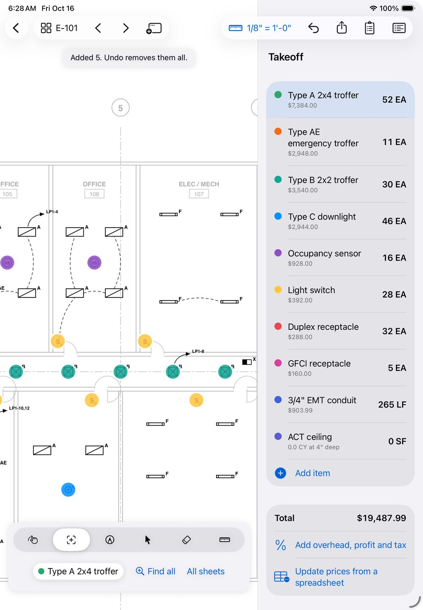
1 2 3 4 5 6 7 8 9 10 11 12 13- Back to the library of takeoffs.
- Sheets. Shows the sheet's number; tap for every sheet as a thumbnail, with search. The arrows beside it step through the set.
- Open in New Window (iPad and Mac): a second sheet beside this one.
- Scale. The sheet's scale; tap for the Scale menu.
- Undo, with Redo beside it once you've undone something.
- Export and print: Excel, CSV, PDF report, plan PDF, punch list, takeoff file.
- Markups: every cloud, note and stamp as a punch list.
- Items panel: show or hide it.
- Hint: says what your next tap will do, and what just happened.
- Tools: Move, Take off, Markup, Edit, Erase, Calibrate.
- Tool options: they change with the tool. In Take off: the item (tap for the item menu), Find all and All sheets, or Snap, Room, Arc and Deduct for runs and areas.
- Items and their totals. Tap one to take it off; press and hold for Edit, Duplicate and Move marks to.
- Total and bid: the cost, overhead, profit and tax, and prices from a spreadsheet.
The six tools
| Tool | What it's for | Mac |
|---|---|---|
| Move | Pan and zoom. Tap a photo pin to see the photo, or a sheet number written on the plan to open that sheet. | ⌘1 |
| Take off | Count, measure runs and areas, Find all and Room, with the item you've picked. | ⌘2 |
| Markup | Clouds, arrows, callouts, notes, highlights, pen, stamps, photos, dimensions and angles. | ⌘3 |
| Edit | Pick marks and markups to move, reshape, copy, restyle or delete them. | ⌘4 |
| Erase | Removes the mark or markup you tap. | ⌘5 |
| Calibrate | Sets the sheet's scale from a dimension you know. | ⌘6 |
On iPhone
Everything is there, in a bar sized for one hand. To keep Undo in the bar, Redo, Items, Export, Markups, Compare and Help sit in the More menu (the … button).
Pinch to zoom in before tapping small symbols. Find all asks you to when a fingertip would cover several.
As each mark goes in, the iPhone gives a light tap you can feel, so you can keep your eyes on the sheet.

Library and importing
The library holds your takeoffs. Each one is a plan set with its items, marks, markups, photos and prices. The … button on a takeoff's row renames it, files it in a folder, moves it onto a revised set or deletes it (a long press, or a right-click on the Mac, opens the same menu).
Import a plan set
- Tap + in the libraryOn a Mac, click + in the window's tool bar.
- Choose what to start withA starter list of items for your trade (Electrical, Drywall and framing, Flooring, Roofing, Plumbing, HVAC, Concrete, Painting) or Blank. Or choose Start with the items of an earlier takeoff: its items, prices, waste and materials come along, without its marks.
- Pick the fileA plan set PDF of any size (hundreds of sheets are fine), or a photo or scan of a sheet (JPEG, PNG or HEIC). A takeoff file sent by someone else opens here too.

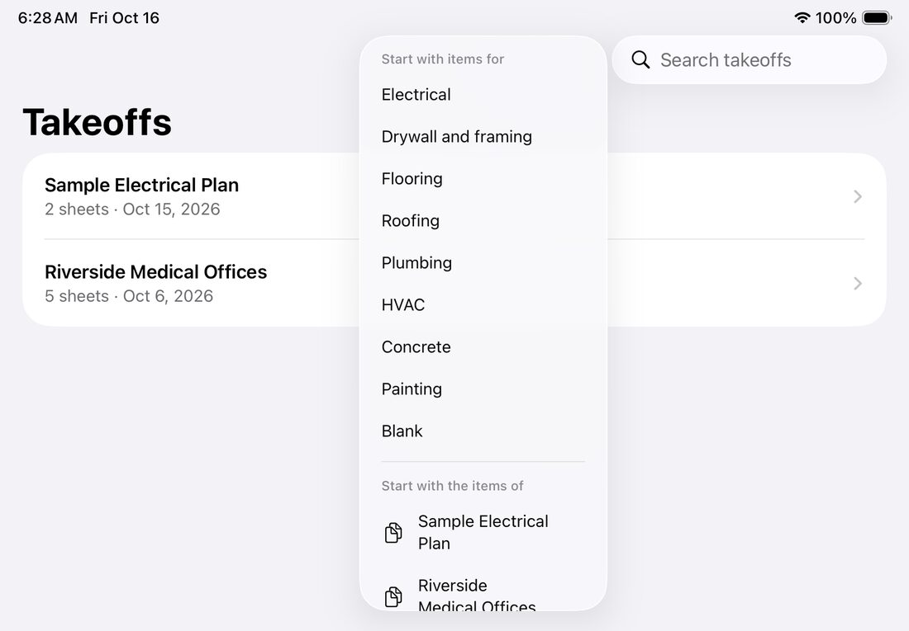
Other ways in: open a PDF in Tally from Files, Mail or any app's share sheet, or drag it onto the library on an iPad or a Mac. Tally keeps its own copy; your original file isn't changed.
Keep the library tidy
- Search by name with the search field at the top.
- Folders: press and hold a takeoff (right-click on a Mac) and choose Move to folder, to file jobs by client or year.
- Rename a takeoff from the same menu.
- Without Tally Pro you keep up to three takeoffs at a time (the sample plan doesn't count); the list shows how many you've used. More
Recently Deleted
A takeoff you delete is kept for 30 days on that device. Open Recently Deleted at the bottom of the library and tap Recover, or Delete for good to remove it now.
If a takeoff was made by a newer version of Tally (on another of your devices, say) or its file was damaged, it stays in the library and says why when you open it. Updating Tally from the App Store opens it.
Sheets and search
Tally reads each sheet's number from its title block, so you can find E-101 the way you would in a paper set.
- Every sheet at once: tap the sheet button at the top left (it shows the sheet number, such as E-101) for a thumbnail of every sheet. Tap one to open it.
- Step through the set with the arrows beside the sheet button (⌘← and ⌘→ on a Mac).
- Sheet numbers are read from the title block, including scanned sheets (read with text recognition) and numbers such as A-201.A.
- Search the plans: type in the sheet browser to find a sheet by number, or any text on the plans: a fixture tag, a room name, a note. A result opens its sheet zoomed to the text, highlighted.
- Scanned sets have no text to search at first, so Tally reads each scanned sheet the first time you search (a few seconds a sheet) and keeps what it read. Later searches are instant.
- Jump along references: with Move, tap a sheet number written on a plan, such as SEE E-501 or a detail's 3/E-501, to open that sheet.
- The This sheet menu (beside the sheet button; in More on iPhone) has the sheet's own tools: Repeat this sheet (typical floor) counts its quantities more than once, for a floor that repeats; Copy this sheet's marks to copies them onto another sheet of the same size; Put this sheet's marks in zone moves them all into a zone.
- Rotate sheet (This sheet menu, ⌘R) turns a sheet that's stored sideways, a quarter turn at a time. The plan file isn't changed, and marks stay where they are on the drawing.
- Two sheets side by side (iPad and Mac): Open in New Window (⌥⌘N, or press and hold a thumbnail in the sheet browser) shows a sheet in a window of its own, with your marks updating live as you work in the other.
Scale
Every sheet has its own scale. Lengths, areas, rooms and dimensions need one; counting doesn't.
The fastest way: the scale the sheet prints
Tally reads the scale printed on each sheet, such as SCALE: 1/8" = 1'-0", 1" = 20', or 1:50 under a view on a metric sheet, scans included.
- On a sheet with no scale yet, Take off offers the printed scale in one tap; with other sheets still without one, the next tap offers Use each sheet's printed scale.
- The Scale menu lists it first, under Printed on this sheet. A sheet that prints several (a plan and its details) lists them all: pick the one for the view you're taking off.
- Use each sheet's printed scale sets every sheet that has no scale yet from the one scale it prints, in a single step (one Undo). Sheets that print several, or none, are left for you, and Tally says how many.
A printed scale is only right if the set was printed at its full size. For a half-size set, or a PDF of unknown origin, check it against a dimension (below).

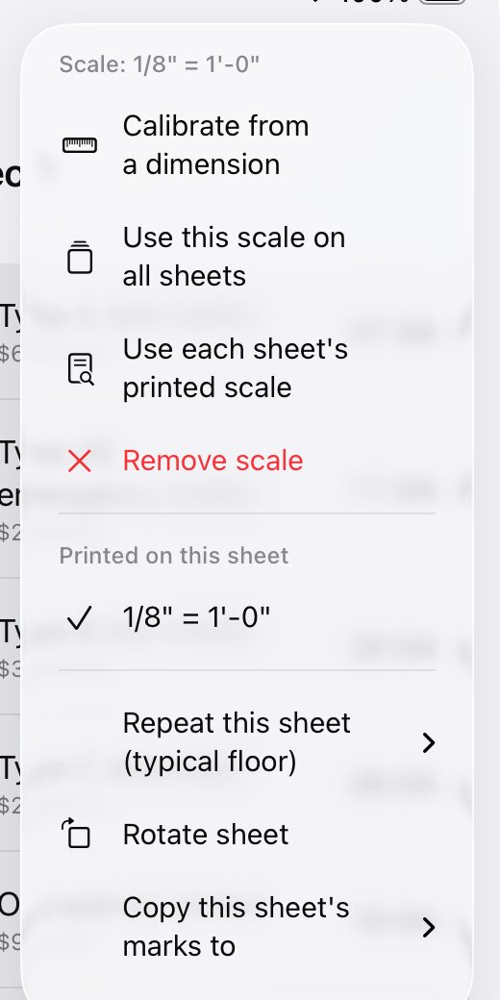
Calibrate from a dimension
- Choose CalibrateIn the tool bar, or Calibrate from a dimension in the Scale menu.
- Tap both ends of a dimension you knowZoom in for accuracy, and use the longest dimension you can find. Taps snap to line ends.
- Type its lengthSuch as
20',20' 6",6"or3.5 m. In a metric takeoff, a number on its own is metres.
If the sheet already has a scale, Tally first shows the line's length at that scale, so you can check that the sheet was printed to scale before changing anything.
More in the Scale menu
- Architectural, Engineering and Metric list the usual scales (metric ones from 1:1 to 1:2500).
- Use this scale on all sheets copies this sheet's scale to the rest of the set.
- Remove scale clears it.
- Units shows the takeoff in feet (LF, SF, cubic yards) or metres (m, m², m³). New takeoffs start in your region's units. Prices, totals and exports follow, and switching never changes a total.
The items panel warns you when a run or area sits on a sheet with no scale yet, so nothing gets priced at zero by accident.
Items
An item is what you're taking off: a fixture type, a conduit size, a wall type, a floor finish. Each has a colour on the plan and a total in the items panel; the item button under the tools shows the chosen item's total too, so a count is in view on iPhone with the panel hidden (with a zone picked, that zone's count, named: “0 EA in Level 2”). The … button on the chosen item's row edits, duplicates or deletes it, or moves its marks to another item.
Add or change an item
- Add item at the bottom of the items panel. Give it a name, a colour, and what it's measured by: Count (EA), Length (LF) or Area (SF).
- Edit: press and hold an item (right-click on a Mac) and choose Edit.
- Unit cost and Waste %: waste is added on top of the measured quantity.
- Materials (optional): what goes with each unit, such as a receptacle's box, device and plate, or a wall's studs and board, each with its own price. Exports add up a materials list.
Options for runs and areas
- Wall height turns a run into wall area, and it can be priced per square foot.
- Extra per run adds drops or makeup to every run.
- Roof pitch turns an area drawn in plan into the true sloped surface (6 for 6/12).
- Depth turns an area into a volume in cubic yards, for a slab, a gravel base or an excavation, and it can be priced per cubic yard.

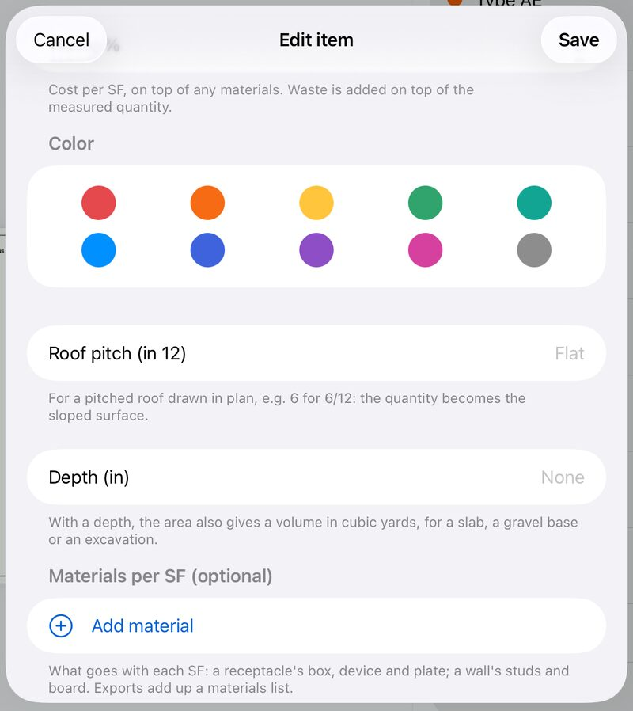
Working with items
- Duplicate an item, with its marks, to price a variant.
- Move marks to another item fixes marks counted against the wrong one.
- Find an item: once a takeoff has more than 10 items, a search field at the top of the panel narrows the list. Totals and the bid always count every item.
- The item menu (the item button under the tools) also has Show only this item's marks, Hide counted symbols and Marker size.
Counting and Find all
Count symbols one tap at a time, or let Find all count every match on the sheet, and then on the rest of the set.
By hand
Choose Take off, pick a count item and tap each symbol. Each tap adds one, in the item's colour; Undo takes back the last.
Find all PRO
- Zoom inuntil one symbol is easy to tap. At full-sheet zoom a fingertip covers several.
- Turn on Find all and tap one copyof the symbol (⌘F on a Mac). Pick the item first.
- Check the proposalsEvery match on the sheet is ringed. Tap any that isn't one, such as a legend's sample or a look-alike, to leave it out. Tap a symbol it missed to count that too.
- Tap AddThey go in together, and one Undo takes them all back.
- All sheetslooks for the same symbol on the rest of the set and tells you what it found, sheet by sheet, before adding.

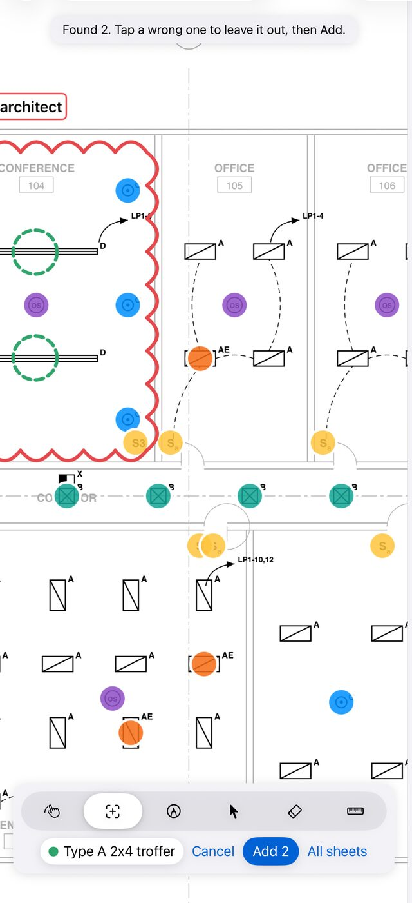

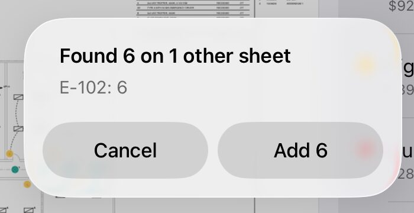
What Find all handles: symbols turned or mirrored on the sheet; types that differ only by their tag, written beside the symbol or inside it (AA and AB, CB and CF are kept apart); long fixtures such as pendant rows; symbols drawn as a word (a switch shown as "S3"); fixtures inside a ceiling grid or on their circuit, with the arcs drawn into them; symbols drawn in gray on hairlines (a mechanical plan's diffusers) or against a door frame; a fixture beside a room name or a pipe's label. Symbols you've already counted are skipped.
Find all works best on PDFs exported from CAD. Scanned paper drawings work, but less reliably, so check the proposals closely on a scan.
See what's left
- Hide counted symbols (item menu) covers what you've counted, so the symbols still to count stand out. Turn it off from the same menu.
- Marker size (item menu): Small, Regular or Large, for crowded sheets.
- Show only this item's marks hides the other items while you work.
Typical floors
Copy this sheet's marks to (This sheet menu) copies a sheet's marks onto another sheet of the same size, in the same places. Marks already there aren't copied twice. Or count the floor once and use Repeat this sheet.
Lengths and areas
Trace runs and areas right on the sheet. Taps snap to the drawing, and each run is labelled with its length.

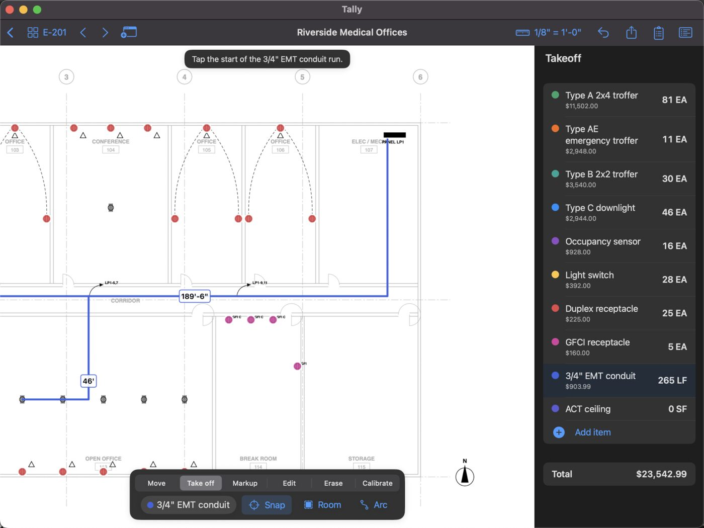
A run
- Pick a length itemsuch as 3/4" EMT conduit or a wall type.
- Tap the start, then each cornerThe hint tells you which tap comes next.
- Tap Done(⌘↩ on a Mac; ⌘. cancels the run).
An area
Pick an area item, tap its corners and tap Done. Areas also total their perimeter.
Drawing options
- Snap: taps snap to the drawing's own line ends and lines. Turn Snap off to place a point anywhere.
- Arc adds a curve: tap a point on the curve, then where it ends.
- Deduct draws a cut-out (shown hatched) that's subtracted from the area, for a shaft or an opening.
- To change a run or area later, use Edit: drag a corner, add one, or remove one.
Rooms in one tap PRO
Tap inside a room and its walls give the outline: the floor area for an area item, or the perimeter for base and trim.

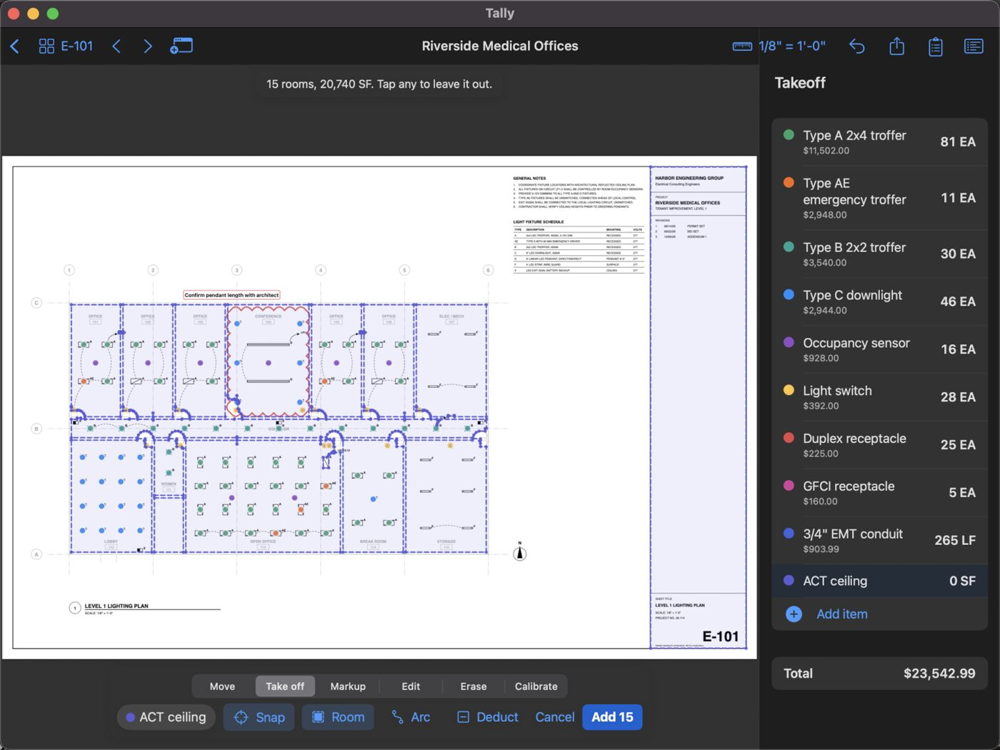
- Pick an area or length itemand set the sheet's scale.
- Turn on Room and tap inside a roomTally outlines it to the inside faces of its walls, closing off doorways.
- Check the outline and tap Add
All rooms outlines every room on the sheet at once. Tap any you don't want to leave it out, then tap Add. One Undo removes them all.
Rooms open to a corridor through a wide opening, or drawn without closed walls, may need tracing by hand. Scanned sheets work too.
Zones
Zones split quantities by floor, area, phase or alternate, with a subtotal for each.
- Add a zone from the item menu (Add a zone (floor, area, phase)), or from the zone menu once you have some.
- Marks go in the zone you've picked, and the items panel totals that zone. Pick All zones for the whole job.
- A whole floor at once: Put this sheet's marks in zone (This sheet menu). In Edit, Move to zone reassigns the marks you've picked.
- Manage zones renames, reorders or deletes them. Deleting a zone keeps its marks.
- Exports add a breakdown by zone.
Markup
Choose Markup, then the kind from the markup menu. Markups never change your quantities.
| Markup | How |
|---|---|
| Cloud | Two taps, at opposite corners: a revision cloud. |
| Arrow, Highlight | Two taps. |
| Callout | Two taps, with its text. With the callout picked in Edit, Add leader points it at one more spot. |
| Note | One tap, with its text. |
| Pen | Write or sketch with Apple Pencil, a finger or the mouse. Strokes drawn nearly straight become straight lines (turn that off in the Style menu). A tap makes a dot. |
| Stamp | One tap: APPROVED, APPROVED AS NOTED, REVISE AND RESUBMIT, REJECTED, FIELD VERIFY, NOT IN CONTRACT, PUNCH, COMPLETE, or your own (New stamp). |
| Photo | Tap a spot, then take a photo, pick one from your library, or choose a file. It's pinned there with an optional caption. |
| Dimension | Two taps: reads the length at the sheet's scale. |
| Angle | Three taps (one side's end, the corner, the other side's end): reads the degrees. |
- Style: each kind of markup keeps its own colour and line weight, in every takeoff, until you change it.
- Edit text (in Edit) changes a note, callout, stamp or caption.
- Photos live inside the takeoff. With Move, tap a photo's pin to see it, share it or caption it. They're listed at the end of the PDF report and the plan PDF.
- Pen with Apple Pencil: once a Pencil has drawn (or with iPadOS's Only Draw with Apple Pencil on), fingers move the sheet, as in Notes.
The punch list
The Markups button at the top lists every markup by sheet. Tap the circle to mark one resolved, or the row to go to it. Show resolved brings back the ones you've closed. Export it as a CSV punch list.

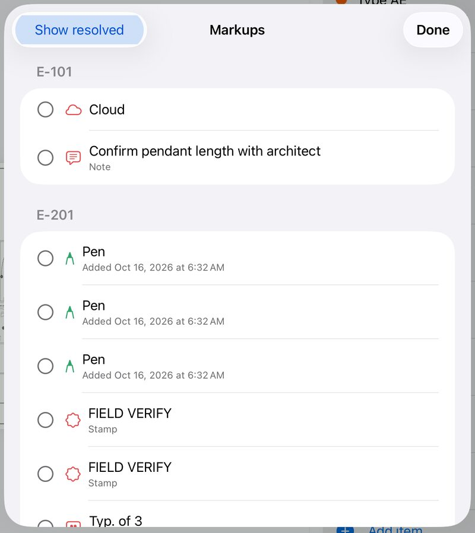
Editing, copy and paste
Choose Edit and tap a mark or markup to pick it.
- Move a point: drag one of its handles. Move the whole thing: drag the mark itself. One Undo puts it back.
- Corners: with a run or area picked, tap its line to add a corner there; drag a corner onto the next one to remove it.
- Select area: drag a box to pick everything inside it. Drag any of them to move them together, or Copy, Delete, Move to zone or restyle them.
- Copy and Paste work across sheets and takeoffs. Pasted on another sheet, marks land in the same place; in another takeoff, they go to its item of the same name. Pasted marks go in the zone you're working in, so a typical floor copied onto the next sheet counts for that floor.
- Erase removes what you tap. Delete removes what you've picked (⌘⌫ on a Mac).
- Undo and Redo step through every change (⌘Z, ⇧⌘Z).
On a Mac, ⌘C, ⌘V and ⌘X work on marks in Edit, and ⌘A picks everything on the sheet.
Pricing the bid
Prices live with the items, and the bid adds your markups on top, all updating as you count.
Item prices
Each item has a unit cost and a waste %, plus the price of any materials that go with it. The items panel shows each item's cost and the takeoff total as you work.
Overhead, profit and tax
- Tap Add overhead, profit and taxunder the total in the items panel.
- Enter percentagesfor contingency, overhead, profit and tax. Return (or Next above the number pad) moves to the next one.
- Add fixed amountsfor costs you don't measure, such as a permit or a lift rental. The percentages apply to them too.
The bid total appears under the takeoff total, and in every export.

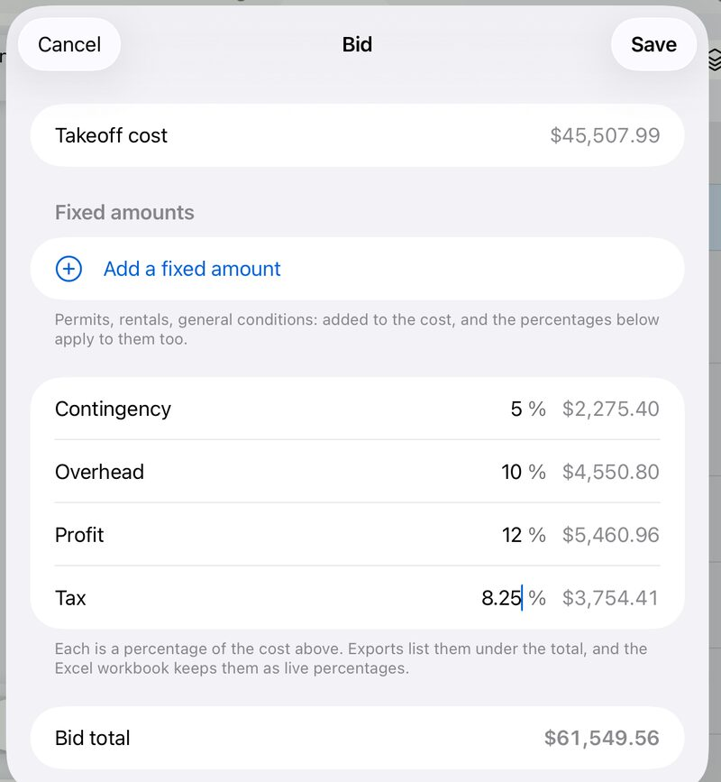
Prices from a spreadsheet
Update prices from a spreadsheet (under the total) sets the price of every item and material a price list names, in one step. One Undo puts the old prices back.
- A supplier's price list: save it as CSV. Tally finds the name column (headed Item, Material, Name or Description) and the price column (headed Unit cost, Price or Cost). Without headings, the first column is the name and the first number after it is the price.
- Your own takeoff: export it as CSV, change the prices in Excel or Numbers, save it as CSV again, and read it back in.
- Commas, semicolons or tabs, currency signs and thousands separators are all fine. Names match whatever their capitals and spacing, and Tally tells you which names it couldn't find.
Exports and printing PRO
Tap the export button at the top of the screen and choose what to send.
| Export | What you get |
|---|---|
| Excel workbook | Live totals: change a price or a percentage in Excel and the bid updates. Sheets for materials, zones, sheets and markups. |
| Quantities (CSV) | Every item's quantity, waste and cost, for Excel or your estimating software. |
| PDF report | A quantity summary, the bid, every marked-up sheet with its own quantities, and your photos. |
| Plan PDF with markups | The plan set with your marks and markups as standard PDF annotations that Bluebeam, Acrobat and Preview list and edit, followed by your photos. |
| Markups as a punch list | A CSV of every markup in sheet order: sheet, type, text, open or resolved, and the date. |
| Takeoff file | The whole takeoff in one file, for someone else with Tally. Sending a takeoff |
| Print this sheet (the sheet on screen with its marks and quantities) or Print the report. ⌘P on a Mac. |
On iPhone and iPad an export opens the share sheet: send it by Mail or Messages, AirDrop it, or save it to Files. On a Mac you choose where to save it.
Exports are written in the language Tally is in, English or Spanish, with your own item names as you typed them.
Need English exports from a phone set to Spanish? Set Tally's own language to English in Settings › Apps › Tally.

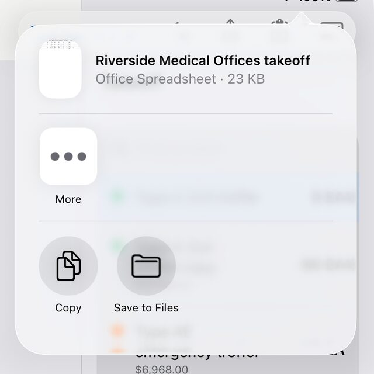
Sending a takeoff
Hand a whole takeoff, with its plans, items, marks, markups and photos, to someone else who uses Tally.
- Export › Takeoff fileTally packs the takeoff into one file (it ends in .tallytakeoff).
- Send itby Mail, Messages or AirDrop, or put it in a shared folder.
- They open itby tapping it, choosing Open in Tally, dropping it on the library or importing it. It becomes a takeoff of their own. Opening one doesn't need Tally Pro.
If they already have that takeoff (you sent it before), Tally asks whether to Replace yours or Keep both. A replaced copy goes to Recently Deleted, so nothing is lost.
Each person works on their own copy; two people can't edit one takeoff at the same time. Your own devices share one copy through iCloud.
Revised sets PRO
Move a takeoff onto an addendum or revision without starting over.
- In the library, press and hold the takeoffand choose Replace with revised set, then pick the new PDF.
- Marks follow their sheets by sheet number,even if sheets were added or reordered. Tally tells you about marks on any sheet the revision drops.
- Compare(at the top of the screen; in the More menu on iPhone) overlays a sheet on the version it replaced: removed in red, added in blue.
The previous plan and takeoff are kept, with the photos of any sheet the revision drops.
iCloud
Signed in to iCloud, your takeoffs appear on each of your iPhone, iPad and Mac with the same Apple Account.
- Your own account: takeoffs are kept in your iCloud, not on any server of ours. Plans and photos go with them, so a takeoff works without a connection once it has arrived.
- Live: changes made on one device show up on the others while the takeoff is open.
- Offline: if two devices changed a takeoff while apart, the copies are combined mark by mark, keeping the latest change of each. Something deleted on one stays deleted.
- Big sets take as long as their download to appear on another device. The iCloud button in the library says how many are still downloading.
- One device only: tap the iCloud button and choose Keep on This Device Only. The takeoffs are copied to the device and stay in iCloud for your other devices. Keep in iCloud puts them back, combined with the copies there.
- If another device replaces the plan with a revised set, or deletes the takeoff while you have it open, Tally says so; open the takeoff again to go on.
iPad, Mac and Apple Pencil
One app on every device, with what each does best.
- Windows: Open in New Window shows a sheet in a window of its own beside the one you're taking off, with marks updating live. Handy for a schedule sheet next to the plan.
- Drag and drop a PDF onto the library to import it.
- Apple Pencil: a double-tap, or a squeeze of Apple Pencil Pro, does what your Pencil settings say: switch to the eraser and back, or to the last tool you used.
- Pen: after an Apple Pencil has drawn, only the Pencil draws and fingers move the sheet, as in Notes.
- On a Mac, every tool is in the Tools menu, and the Help menu has this guide, support, and your Tally Pro subscription.
Keyboard shortcuts
On a Mac, and from a keyboard attached to an iPad.
| Keys | Does |
|---|---|
| ⌘1 … ⌘6 | Move, Take off, Markup, Edit, Erase, Calibrate |
| ⌘F | Find all |
| ⌘↩ / ⌘. | Finish / cancel the run or area you're drawing |
| ⌘Z / ⇧⌘Z | Undo / Redo |
| ⌘C ⌘X ⌘V | Copy, cut, paste marks (in Edit) |
| ⌘A | Pick everything on the sheet (in Edit) |
| ⌘⌫ | Delete what's picked (Mac) |
| ⌘← / ⌘→ | Previous / next sheet |
| ⌘+ ⌘− ⌘0 | Zoom in, zoom out, fit the sheet |
| ⌘R | Rotate the sheet |
| ⌥⌘N | Open the sheet in a new window |
| ⌘P | Print this sheet |
Tally Pro
Counting and measuring are free. Tally Pro adds what turns a takeoff into a bid.
Free
No account, no time limit, up to 3 takeoffs at a time.
- Open any plan set, with no limit on sheets
- Scales, printed and calibrated
- Count by hand, runs and areas, with no limit
- Zones, markups, photos and the punch list
- Pricing and the bid, on screen
- iCloud on all your devices
- Every Pro feature on the sample plan
Tally Pro PRO
Monthly or yearly, with a 7-day free trial.
- Find all, on a sheet and the whole set
- Room and All rooms
- Excel, CSV and the PDF report
- Plan PDF with markups and the punch list
- Takeoff files and printing
- Revised sets and Compare
- No limit on takeoffs
- Try it free, no card: every Pro feature works on the sample plan. Help › Try Tally Pro on the sample plan opens it, with Find all, Rooms and the exports ready to try.
- Three takeoffs free: without Pro you keep up to three takeoffs at a time; the sample doesn't count. The list of takeoffs shows how many you've used, and deleting one frees its place. Every takeoff you have always opens, whatever the count.
- The free week: starting Tally Pro with its 7-day trial, Help shows the day it ends, and two days before, the list of takeoffs reminds you, with the way to cancel.
- One subscription, every device: Tally Pro covers your iPhone, iPad and Mac with the same Apple Account.
- Manage or cancel: Help in the list of takeoffs (the Help menu on a Mac) › Manage subscription. Or Settings › your name › Subscriptions. Cancel at least 24 hours before the period ends.
- New device? Help › Restore purchases.
- If you stop subscribing, nothing is lost: every takeoff stays and opens, and everything free keeps working.
Languages and accessibility
- English and Spanish: Tally follows your device's language. To use another for Tally alone, go to Settings › Apps › Tally › Language.
- VoiceOver reads Tally's buttons and items, and announces each hint, such as how many matches Find all proposed.
- Larger text and dark mode follow your device's settings.
Something unclear, or missing from this guide? Email us and we'll answer, and improve the guide.